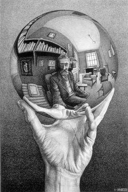

Hand with Reflecting Sphere
M. C. Escher · 1935 · Lithograph · 31.8 × 21.3 cm
In copyright. Look and learn: shown for study, not for download.
This lithograph was first printed in January 1935 and is also known as Self-Portrait in Spherical Mirror. The hand holding the sphere is Escher's own. In much of his self-portraiture of this kind he is drawing the sphere; here he is seated and gazing into it. One of the framed pictures on the wall appears to be of an Indonesian shadow puppet.